|
* no longer available
Android
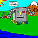
The androids are robotic and cybernetic units designed for a variety of
military and hazardous civilian tasks. They have limited intelligence but
are capable of immense physical strength. Unlike organic races, androids
have no mana. They are not recommended for inexperienced players.
Asphyxiation: Completely resistant
Beam: Somewhat susceptible
Cold: Somewhat susceptible
Disease: Completely resistant
Edged: Somewhat resistant
Electric: Devastatingly susceptible
Energy: Significantly susceptible
Fire: Significantly resistant
Magic Electric: Devastatingly susceptible
Magic Fire: Significantly resistant
Piercing: Significantly resistant
Psionic: Completely resistant
Toxic: Completely resistant

Beer Elf
These are the disenfranchised cult who once lived among the Grey Elves. The
Grey Elves, disliking the Beer Elves' ways, kicked them out after a rather
short and unbloody war. The Beer Elves have since moved in and out of
various places, only to be kicked out again and again. Beer Elves are the
only really hardy breed of elf, having their constitution increased by
generations of liver-destroying alcohol intake. Beer elves are shortish,
with perpetually red-rimmed eyes.
Disease: Somewhat susceptible
Magic: Slightly resistant
Magic Electric: Slightly resistant
Magic Force: Slightly resistant
Centaur
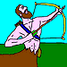
Centaurs are mythical half-men, half-horse creatures who dwell far from human
habitation in secluded pastures.
Chicken
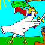
You know what a chicken is, right? This is a chicken.
There is no good reason to be a chicken.
Coatl
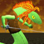
These feathered reptilian beings are rumored to have descended from the
heavens countless millenia ago. They have no legs or feet, but rather their
lower body resembles that of a large snake. They have arms, however, and a
crest of multihued feathers running down their neck and back a little ways.
Quick and cunning, they are adept at both magic and fencing.
Cold: Significantly resistant
Fire: Slightly susceptible
Magic: Slightly resistant
Magic Cold: Quite resistant
Magic Fire: Somewhat susceptible
Draconian
The Draconians are descendants of the dragons of old. They are great
reptilian beings, but not nearly as great as their ancient ancestors. The
Draconians have been around for many aeons. They have great talents as both
powerful fighters and learned casters. Slow, but sure, is the way of the
Draconian.
Asphyxiation: Very resistant
Cold: Very resistant
Disease: Highly susceptible
Ego: Highly susceptible
Magic Cold: Quite resistant
Psionic: Quite resistant
Drow Elf
The 'Black Elves,' or drow, have been spoken of in legends for centuries.
Dwelling deep beneath the surface in subterranean caves and caverns, the drow
are as dark as faeries are bright. Drow are known as weak fighters but
strong magic-users.
Magic: Somewhat resistant
Magic Cold: Slightly resistant
Magic Electric: Slightly resistant
Magic Fire: Slightly resistant
Magic Force: Slightly resistant
Psionic: Quite resistant
Dwarf
Though the toughest of the civilized races, dwarves are short and stocky with
a ruddy complexion and much hair. Because of their great constitution and
willpower, dwarves are resistant to both magic and poison.
Disease: Moderately resistant
Magic: Moderately resistant
Magic Electric: Somewhat resistant
Magic Fire: Somewhat resistant
Magic Force: Somewhat resistant
Elf
Elves are a magical, ancient race. They appear slightly shorter than most
humans and are a bit more slender. They have pale skin and light eyes and
hair. They have a knack for magic and are fairly nimble people.
Magic: Somewhat resistant
Magic Electric: Slightly resistant
Magic Fire: Slightly resistant
Magic Force: Slightly resistant
Psionic: Moderately resistant
Gnome
Gnomes are humanoids similar to their larger cousins, dwarves. Most gnomes
are wood brown, though a few range from gray brown of skin. Their hair is
medium to pure white and their eyes are gray-blue to bright blue. Also, like
their dwarven cousins, gnomes have some resistance to magic and poison.
Magic: Moderately resistant
Magic Electric: Somewhat resistant
Magic Fire: Somewhat resistant
Magic Force: Somewhat resistant
Goblin
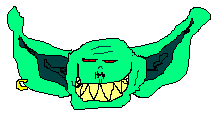
Goblins are just about the most annoying race alive next to Imps. What they
lack in strength, intelligence, willpower, dexterity, charisma, and
constitution, they make up for in sheer cruelty. Goblins enjoy killing
bunnies, butterflies, and dolphins for the simple fact that they exist.
Goblins stand about 4 feet high, with largish heads and eternally runny
noses. Their skin is a soft greenish color, like pea soup vomit.
Disease: Quite resistant
Magic: Moderately susceptible
Magic Cold: Somewhat susceptible
Magic Electric: Somewhat susceptible
Magic Fire: Somewhat susceptible
Magic Force: Somewhat susceptible
Psionic: Moderately susceptible
Grey Elf
These noble elves are a very reclusive sort who live in isolated meadowlands
and rarely associate with other humanoids. Grey elves have silver hair and
amber eyes or pale golden hair and violet eyes. They are more intelligent
than most other elves, yet have extremely fragile bodies.
Magic: Moderately resistant
Magic Electric: Somewhat resistant
Magic Fire: Somewhat resistant
Magic Force: Somewhat resistant
Psionic: Quite resistant
Half Elf
All half-elves are of human stock. They are handsome folk, with the good
features of each of their races. They mingle freely with either race, being
only slightly taller than the average elf.
Magic: Slightly resistant
Magic Electric: Slightly resistant
Magic Fire: Slightly resistant
Magic Force: Slightly resistant
Halfling
Halflings are basically hard-working, orderly and peaceful citizens of
communities similar to humans. They are of ruddy complexion, and tend toward
brown or sandy brown hair coloration, and have brown or hazel eyes.
Halflings also have resistances to magic and poison.
Magic: Somewhat resistant
Magic Electric: Slightly resistant
Magic Fire: Slightly resistant
Magic Force: Slightly resistant
High Elf
High elves are another group of reclusive elves who dwell in the mountains
and higher hills across the countryside. They have sandy brown hair and dark
eyes.
Ego: Somewhat resistant
Magic: Somewhat resistant
Magic Electric: Slightly resistant
Magic Fire: Slightly resistant
Magic Force: Slightly resistant
Psionic: Moderately resistant
High Human
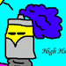
High humans are often taller than elves, but heavier boned, and physically
stronger, though less nimble than the elves. Their hair is often dark and
they are fair skinned.
Cold: Slightly resistant
Ego: Somewhat resistant
Electric: Slightly resistant
Fire: Slightly resistant
Magic: Slightly resistant
Psionic: Slightly resistant
Toxic: Slightly resistant
Human
The world is, for the majority, populated with humans. These creatures show
a remarkable aptitude for adapting to their surroundings, and often times
adapting their surroundings to themselves. Humans are bipedal and come in
various shades ranging from a pale yellow to dark black.
Imp
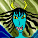
Imps are the physical manifestations of minor demons. They are generally
malevolent and have a sadistic sense of humor. Though small and weak, they
are fast and tough. They are also noted for their cunning and ruthlessness.
They are rumored to have resistance to magic.
Crushing: Somewhat susceptible
Explosive: Somewhat susceptible
Magic: Moderately resistant
Magic Electric: Somewhat resistant
Magic Fire: Somewhat resistant
Magic Force: Somewhat resistant
Ka'nine
The Ka'nine are a race of dog-based humanoids created by some twisted
magician. The story goes that he was extremely drunk one night and started
fooling around with magic and his doberman. The end result was a very loud,
very obnoxious, very loyal race of intelligent beings who in general love
nothing more than settling down with a bone in front of a warm fire. One
interesting facet of these amazing creatures is their inexplicable hatred of
cats. They have been known to attack cats of all kinds with no provocation
whatsoever. Ka'nine tend towards being doberman-like, but other varieties
have been known to occur. Ka'nine lack manual dexterity, but are
surprisingly intelligent.
Psionic: Somewhat resistant
Sonic: Quite susceptible
Kender
Kenders are near in height to dwarves, but this is where the similarities
end. Kenders are very cheerful creatures, almost to the point of annoyance,
as dwarfs tend to hate these jolly souls. They have a tendency to 'borrow'
things from people without telling them. Having a naturally insatiable
curiosity, kenders make excellent lock pickers and general gatherers of
seemingly useless information.
Ego: Completely resistant
Klingon
Klingons are a large, strong warrior race. They hold their honor sacredly
above all else. They live for the hunt, the fight and the kill. Although
Klingons are not noted for their mental prowess, they do have a flare for
combat tactics. Klingon bodies develop into a muscular frame, their hair
thick and black against dark skin.
Ego: Quite susceptible
Psionic: Slightly susceptible
Low Human
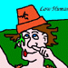
Low humans are often ugly little creatures; some skin is often missing from
places of their body, exposing bone. They are physically weaker than most
worms, their hair is often gone, and they rarely have a full set of teeth.
Disease: Somewhat resistant
Toxic: Somewhat resistant
Lobstar Bear
Lobstar Bears are, like the name suggests, a cross between a bear and a
lobster. These ursocrustaceans stand roughly the same height as a human when
mature, though they continue to grow throughout their lives. Their skin is
thick, matted blackish or brownish fur broken up with chitinous plates that
cover large, nonflexible areas. Their thorax is segemented plates, and they
have a swept carapace from their shoulders to the top of their head. Though
they remain mostly flexible, they lack some of the range of movement as
humans, notable in their lack of neck, and relatively short, stubby legs.
Lobstar Bears stink really badly. Another notable feature is that they have
claws rather than hands. While being more flexible and developed than
traditional lobster claws, they are still lacking when compared to hands.
Their chitinous plates are greenish/blueish, and prevent them from wearing
much in the way of additional armor. The plates do grow thicker and stronger
as they grow older, occasionally being shed and replaced.
Cold: Significantly resistant
Fire: Somewhat susceptible
Magic Cold: Somewhat resistant
Magic Fire: Somewhat susceptible
Merfolk
Merfolk resemble humans or elves from the waist up, with slightly pointed
ears and brightly colored eyes. Below the waist merfolk possess a long
piscine tail, which is flexible enough to allow them to move upon dry land.
Merfolk are naturally agile and are particularly adept with piercing weapons,
but must regularly return to deep waters to maintain full health.
Cold: Somewhat resistant
Magic Cold: Somewhat resistant
oison: Somewhat resistant
Nymph
Nymphs are graceful and supernaturally beautiful creatures that live for
pleasure. They are always female and are reclusive, usually living away from
the noise of cities, taking their pleasure from wandering humans, or
venturing into the cities for short stays. Their physical appearance is as
diverse as that of humans, ranging from black skin to pale pink, but all are
beautiful. Their ears are pointed, but not so sharply as those of elves. They
resent wearing any but the most scanty clothing and dislike weapons
intensely, for they despise combat. They have a strong will and high
dexterity to aid in their nightly pursuits.
Blunt: Slightly susceptible
Crushing: Moderately susceptible
Ego: Highly resistant
Explosive: Moderately susceptible
Falling: Moderately susceptible
Magic: Quite resistant
Psionic: Quite resistant
Withering: Highly resistant
Orc
Greater orcs have become domesticated, as much as trolls. Orcs are heavy of
build, bred as warriors and laborers. They prefer darkness to bright light
and tend to be less social than other races.
Disease: Moderately resistant
Magic: Somewhat susceptible
Magic Cold: Somewhat susceptible
Magic Electric: Somewhat susceptible
Magic Fire: Somewhat susceptible
Magic Force: Somewhat susceptible
Psionic: Moderately susceptible
Parthan
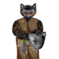
Parthans are a race of large, feline predators. They have basically humanoid
bodies, but with long, sturdy tails. They also have a thick pelt of fur
which varies from individual to individual. Most common are black or orange
coats, however. Parthans have a strong sense of honor, but by no means
consider honor as important as one's life. Evolved for combat, they excel in
the physicial, while lacking in the mental. Parthan warriors are common, but
Parthan magic users are rare, and very respected.
Cold: Somewhat resistant
Falling: Quite resistant
Fire: Slightly susceptible
Magic Cold: Somewhat resistant
Magic Fire: Slightly susceptible
Psionic: Somewhat susceptible
Pig
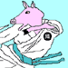
This is a cute ungulate with a short, curly tail. Though pigs have long been
oppressed on EotL by their barnyard brothers, the sheep and the chickens, the
pigs are coming back strong to kick some ass and take a few names.
Ego: Slightly resistant
Pixie
Creatures of Faerie, pixies are small and fragile, but very quick and
intelligent. Since leaving the Faerie realms, their butterfly-like wings
have become mostly vestigial, but they are lovely to behold. Pixies are
charming creatures, generally adept at mischievous types of magic, but
strongly disinclined where physical confrontation is concerned, due to the
fragile and vulnerable nature of their wings.
Explosive: Somewhat susceptible
Falling: Slightly resistant
Fire: Significantly susceptible
Magic: Significantly resistant
Magic Cold: Moderately resistant
Magic Electric: Moderately resistant
Magic Fire: Somewhat susceptible
Magic Force: Moderately resistant
Skaven
Skaven are a race of large, rodent scavengers. They have a basic humanoid
build, but have features that are characteristic of rats. Their body is
covered with a coat of hair, usually brown in color, and they have a long,
hairless tail. Skaven are a very quick and agile race, with below-average
endurance and mental powers.
Disease: Very resistant
Fire: Slightly susceptible
Magic Fire: Slightly susceptible
Psionic: Somewhat susceptible
Skaven Magi
Skaven are a race of large, rodent scavengers. They have a basic humanoid
build, but have features that are characteristic of rats. Their body is
covered with a coat of hair, usualy brown in color, and they have a long,
hairless tail. Skaven magi are not as quick as the standard Skaven, but they
are mentally superior and have a natural talent for magic.
Disease: Very resistant
Fire: Slightly susceptible
Magic: Quite resistant
Magic Fire: Slightly susceptible
Magic Force: Moderately resistant
Spriggan
If a spriggan were to stand still long enough for you to get a good look,
you might mistake it for a realistic children's doll. Spriggans are elven in
appearance in all ways except scale. Due to their small size, spriggans are
limited in what they can wield, wear, and carry. However, whatever they lack
in stature they more than make up in effort. Spriggans are nimble,
intelligent, extremely hard to hit, and seem to have no problems finding ways
to strike their opponents in the most uncomfortable of places.
Squid
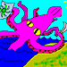
Squids have evolved to the point where they can now live upon and traverse
the land with relative ease. A Squid's body consists mainly of its dome, or
head, and its eight tentacles.
Asphyxiation: Completely resistant
Magic Electric: Somewhat susceptible
Swiss Vampire Elf
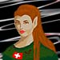
These creatures are superior in almost every way to almost all other races.
They are, however, parasites of other sentients and despite their inborn
superiority, have managed to botch everything up and aren't running the
world, despite popular belief.
Asphyxiation: Highly susceptible
Beam: Highly susceptible
Blunt: Highly susceptible
Cold: Highly susceptible
Crushing: Highly susceptible
Disease: Highly susceptible
Drain: Highly susceptible
Edged: Highly susceptible
Ego: Highly susceptible
Electric: Highly susceptible
Energy: Highly susceptible
Explosive: Highly susceptible
Falling: Highly susceptible
Fire: Highly susceptible
Holy: Devastatingly susceptible
Magic: Highly susceptible
Magic Cold: Highly susceptible
Magic Electric: Highly susceptible
Magic Fire: Highly susceptible
Magic Force: Highly susceptible
Piercing: Highly susceptible
Psionic: Highly susceptible
Sonic: Highly susceptible
Sting: Highly susceptible
Unholy: Highly susceptible
Withering: Highly susceptible
Wooden: Devastatingly susceptible
Teddy Bear
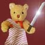
Teddy Bears are small, lovable creatures. Their paws are too clumsy to wield
most weapons, and their awkward body shape prohibits most armor from being
worn, also. They are, however, small and agile, reasonably intelligent, and
cute as a race can be.
Trenol
Trenols, slowly becoming one of the most peculiar of beings, have just about
all of the features of the human race. On average, they are not so tall or
as strong as a human, yet they are quick and pack quite a constitution. They
are especially fond of humans (which they call "tail-less ones") and of
polished gems.
Troll
Trolls are horrid carnivores found in nearly every clime. They are feared by
most creatures, much supported by their raw strength. Unfortunately, they
are also very stupid, which often becomes the downfall of trolls. Troll hide
is a nauseating moss green, mottled green and gray, or putrid gray. The
writhing, hair-like growth upon a troll's head is greenish black or iron
gray. The eyes of trolls are dull-black.
Disease: Quite resistant
Electric: Very resistant
Fire: Very susceptible
Magic Electric: Very resistant
Magic Fire: Very susceptible
Psionic: Highly susceptible
Toxic: Quite susceptible
Wood Elf
Sometimes called sylvan elves, these creatures are very reclusive and
generally avoid all contact. They are unusually strong for elves but aren't
quite as intelligent. They live in primaeval forests and distant woodlands.
Their complexion is fair, their hair is yellow to coppery red, and their eyes
are light brown, light green, or hazel.
Magic: Somewhat resistant
Magic Electric: Slightly resistant
Magic Fire: Slightly resistant
Magic Force: Slightly resistant
Psionic: Somewhat resistant
Zombie
Zombies are 'life challenged' individuals who are universally afflicted with
an insatiable craving for brains. No, not education. Zombies are strong and
have an incredible endurance, accompanied by a powerful aversion to fire and
magical or holy weapons. Zombies draw no breath, eat no food (other than the
aforementioned brains), and do not play well with children. Not recommended
for inexperienced players.
Asphyxiation: Completely resistant
Cold: Moderately resistant
Disease: Completely resistant
Edged: Somewhat resistant
Fire: Moderately susceptible
Holy: Significantly susceptible
Magic Cold: Somewhat resistant
Magic Fire: Somewhat susceptible
Piercing: Somewhat resistant
Poison: Very resistant
Artwork credits:
Android, Beer Elf, Centaur, Chicken, High/Low Human, Squid - Markus
Goblin - Minister
Coatl, Nymph, Swiss Vampire Elf, Teddy Bear - Hannah
Parthan - Maks
Imp, Pig - Voy
|
|
{kind=link}
{kind=link}
{kind=link}
{kind=link}
{kind=link}
{kind=link}
{kind=link}
{kind=link}
{kind=link}
{kind=link}
{kind=link}
{kind=link}
{kind=link}